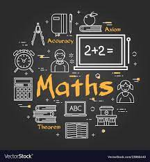
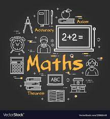

Sir Isaac Newton FRS (25 December 1642 – 20 March 1726/27)[a] was an English mathematician, physicist, astronomer, alchemist, theologian, and author who was described in his time as a "natural philosopher". He was a key figure in the philosophical revolution known as the Enlightenment. His book Philosophiæ Naturalis Principia Mathematica (Mathematical Principles of Natural Philosophy), first published in 1687, established classical mechanics. Newton also made seminal contributions to optics, and shares credit with German mathematician Gottfried Wilhelm Leibniz for developing infinitesimal calculus.
In the Principia, Newton formulated the laws of motion and universal gravitation that formed the dominant scientific viewpoint for centuries until it was superseded by the theory of relativity. Newton used his mathematical description of gravity to derive Kepler's laws of planetary motion, account for tides, the trajectories of comets, the precession of the equinoxes and other phenomena, eradicating doubt about the Solar System's heliocentricity. He demonstrated that the motion of objects on Earth and celestial bodies could be accounted for by the same principles. Newton's inference that the Earth is an oblate spheroid was later confirmed by the geodetic measurements of Maupertuis, La Condamine, and others, convincing most European scientists of the superiority of Newtonian mechanics over earlier systems.

 
